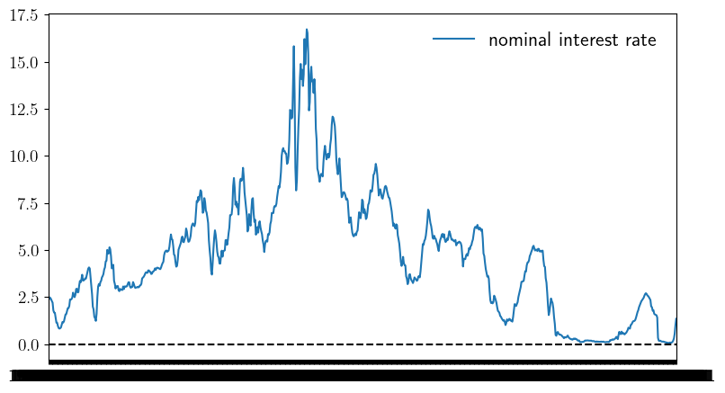
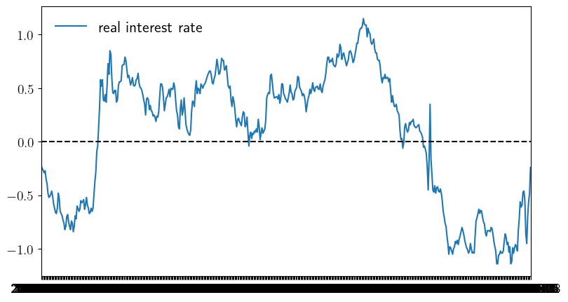
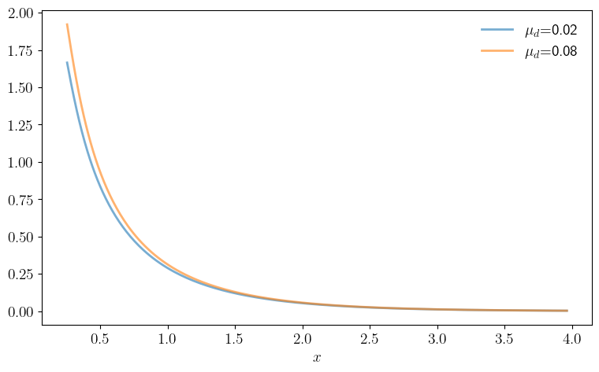
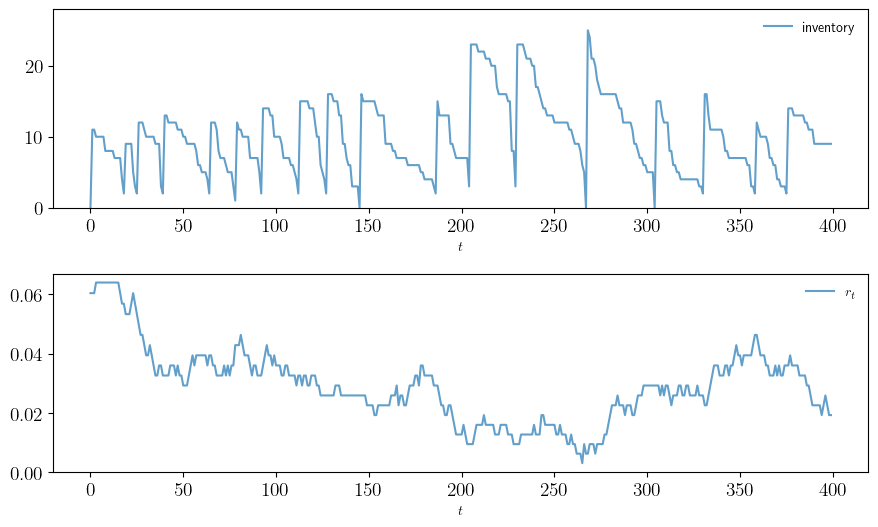

Chapter 6: Stochastic Discounting#
plot_interest_rates.py#
# Nominal interest rate from https://fred.stlouisfed.org/series/GS1
# Real interest rate from https://fred.stlouisfed.org/series/WFII10
#
# Download as CSV files
#
import pandas as pd
import numpy as np
import matplotlib.pyplot as plt
import matplotlib.pyplot as plt
plt.rcParams.update({"text.usetex": True, "font.size": 14})
df_nominal = pd.read_csv("./data/GS1.csv")
df_real = pd.read_csv("./data/WFII10.csv")
def plot_rates(df, fontsize=16, savefig=False):
r_type = 'nominal' if df.equals(df_nominal) else 'real'
fig, ax = plt.subplots(figsize=(9, 5))
ax.plot(df.iloc[:, 0], df.iloc[:, 1], label=f'{r_type} interest rate')
ax.plot(df.iloc[:, 0], np.zeros(df.iloc[:, 1].size), c='k', ls='--')
ax.set_xlim(df.iloc[0, 0], df.iloc[-1, 0])
ax.legend(fontsize=fontsize, frameon=False)
if savefig:
fig.savefig(f'./figures/plot_interest_rates_{r_type}.pdf')
plot_rates(df_nominal)

plot_rates(df_real)

pd_ratio.py#
"""
Price-dividend ratio in a model with dividend and consumption growth.
"""
from quantecon.markov import tauchen
import numpy as np
from collections import namedtuple
# NamedTuple Model
Model = namedtuple("Model", ("x_vals", "P", "β", "γ",
"μ_c", "σ_c", "μ_d", "σ_d"))
def create_asset_pricing_model(
n=200, # state grid size
ρ=0.9, ν=0.2, # state persistence and volatility
β=0.99, γ=2.5, # discount and preference parameter
μ_c=0.01, σ_c=0.02, # consumption growth mean and volatility
μ_d=0.02, σ_d=0.1): # dividend growth mean and volatility
"""
Creates an instance of the asset pricing model with Markov state.
"""
mc = tauchen(n, ρ, ν)
x_vals, P = np.exp(mc.state_values), mc.P
return Model(x_vals=x_vals, P=P, β=β, γ=γ,
μ_c=μ_c, σ_c=σ_c, μ_d=μ_d, σ_d=σ_d)
def build_discount_matrix(model):
"""Build the discount matrix A."""
x_vals, P, β, γ, μ_c, σ_c, μ_d, σ_d = model
e = np.exp(μ_d - γ*μ_c + (γ**2 * σ_c**2 + σ_d**2)/2 + (1-γ)*x_vals)
return β * (e * P.T).T
def pd_ratio(model):
"""
Compute the price-dividend ratio associated with the model.
"""
x_vals, P, β, γ, μ_c, σ_c, μ_d, σ_d = model
A = build_discount_matrix(model)
assert np.max(np.abs(np.linalg.eigvals(A))) < 1, "Requires r(A) < 1."
n = len(x_vals)
I = np.identity(n)
return np.linalg.solve((I - A), np.dot(A, np.ones(n)))
# == Plots == #
import matplotlib.pyplot as plt
import matplotlib.pyplot as plt
plt.rcParams.update({"text.usetex": True, "font.size": 14})
default_model = create_asset_pricing_model()
def plot_main(μ_d_vals=(0.02, 0.08),
savefig=False,
figname="./figures/pd_ratio_1.pdf"):
fig, ax = plt.subplots(figsize=(9, 5.2))
for μ_d in μ_d_vals:
model = create_asset_pricing_model(μ_d=μ_d)
x_vals, P, β, γ, μ_c, σ_c, μ_d, σ_d = model
v_star = pd_ratio(model)
ax.plot(x_vals, v_star, linewidth=2, alpha=0.6,
label=r"$\mu_d$=" + f"{μ_d}")
ax.legend(frameon=False)
ax.set_xlabel(r"$x$")
if savefig:
fig.savefig(figname)
plot_main()

inventory_sdd.py#
"""
Inventory management model with state-dependent discounting. The discount
factor takes the form β_t = Z_t, where (Z_t) is a discretization of a
Gaussian AR(1) process
X_t = ρ X_{t-1} + b + ν W_t.
"""
from quantecon import compute_fixed_point
from quantecon.markov import tauchen, MarkovChain
import numpy as np
from time import time
from numba import njit, prange
from collections import namedtuple
# NamedTuple Model
Model = namedtuple("Model", ("K", "c", "κ", "p", "r",
"R", "y_vals", "z_vals", "Q"))
@njit
def ϕ(p, d):
return (1 - p)**d * p
@njit
def f(y, a, d):
return np.maximum(y - d, 0) + a # Inventory update
def create_sdd_inventory_model(
ρ=0.98, ν=0.002, n_z=20, b=0.97, # Z state parameters
K=40, c=0.2, κ=0.8, p=0.6, # firm and demand parameters
d_max=100): # truncation of demand shock
d_vals = np.arange(d_max+1)
ϕ_vals = ϕ(p, d_vals)
y_vals = np.arange(K+1)
n_y = len(y_vals)
mc = tauchen(n_z, ρ, ν)
z_vals, Q = mc.state_values + b, mc.P
ρL = np.max(np.abs(np.linalg.eigvals(z_vals * Q)))
assert ρL < 1, "Error: ρ(L) >= 1." # check r(L) < 1
R = np.zeros((n_y, n_y, n_y))
for i_y, y in enumerate(y_vals):
for i_y_1, y_1 in enumerate(y_vals):
for i_a, a in enumerate(range(K - y + 1)):
hits = [f(y, a, d) == y_1 for d in d_vals]
R[i_y, i_a, i_y_1] = np.dot(hits, ϕ_vals)
r = np.empty((n_y, n_y))
for i_y, y in enumerate(y_vals):
for i_a, a in enumerate(range(K - y + 1)):
cost = c * a + κ * (a > 0)
r[i_y, i_a] = np.dot(np.minimum(y, d_vals), ϕ_vals) - cost
return Model(K=K, c=c, κ=κ, p=p, r=r, R=R,
y_vals=y_vals, z_vals=z_vals, Q=Q)
@njit
def B(i_y, i_z, i_a, v, model):
"""
The function B(x, z, a, v) = r(x, a) + β(z) Σ_x′ v(x′) P(x, a, x′).
"""
K, c, κ, p, r, R, y_vals, z_vals, Q = model
β = z_vals[i_z]
cv = 0.0
for i_z_1 in prange(len(z_vals)):
for i_y_1 in prange(len(y_vals)):
cv += v[i_y_1, i_z_1] * R[i_y, i_a, i_y_1] * Q[i_z, i_z_1]
return r[i_y, i_a] + β * cv
@njit(parallel=True)
def T(v, model):
"""The Bellman operator."""
K, c, κ, p, r, R, y_vals, z_vals, Q = model
new_v = np.empty_like(v)
for i_z in prange(len(z_vals)):
for (i_y, y) in enumerate(y_vals):
Γy = np.arange(K - y + 1)
new_v[i_y, i_z] = np.max(np.array([B(i_y, i_z, i_a, v, model)
for i_a in Γy]))
return new_v
@njit
def T_σ(v, σ, model):
"""The policy operator."""
K, c, κ, p, r, R, y_vals, z_vals, Q = model
new_v = np.empty_like(v)
for (i_z, z) in enumerate(z_vals):
for (i_y, y) in enumerate(y_vals):
new_v[i_y, i_z] = B(i_y, i_z, σ[i_y, i_z], v, model)
return new_v
@njit(parallel=True)
def get_greedy(v, model):
"""Get a v-greedy policy. Returns a zero-based array."""
K, c, κ, p, r, R, y_vals, z_vals, Q = model
n_z = len(z_vals)
σ_star = np.zeros((K+1, n_z), dtype=np.int32)
for (i_z, z) in enumerate(z_vals):
for (i_y, y) in enumerate(y_vals):
Γy = np.arange(K - y + 1)
i_a = np.argmax(np.array([B(i_y, i_z, i_a, v, model)
for i_a in Γy]))
σ_star[i_y, i_z] = Γy[i_a]
return σ_star
@njit
def get_value(v_init, σ, m, model):
"""Approximate lifetime value of policy σ."""
v = v_init
for _ in range(m):
v = T_σ(v, σ, model)
return v
def solve_inventory_model(v_init, model):
"""Use successive_approx to get v_star and then compute greedy."""
v_star = compute_fixed_point(lambda v: T(v, model), v_init,
error_tol=1e-5, max_iter=1000, print_skip=25)
σ_star = get_greedy(v_star, model)
return v_star, σ_star
def optimistic_policy_iteration(v_init,
model,
tolerance=1e-6,
max_iter=1_000,
print_step=10,
m=60):
v = v_init
error = tolerance + 1
k = 1
while (error > tolerance) and (k < max_iter):
last_v = v
σ = get_greedy(v, model)
v = get_value(v, σ, m, model)
error = np.max(np.abs(v - last_v))
if k % print_step == 0:
print(f"Completed iteration {k} with error {error}.")
k += 1
return v, get_greedy(v, model)
# == Plots == #
import matplotlib.pyplot as plt
import matplotlib.pyplot as plt
plt.rcParams.update({"text.usetex": True, "font.size": 14})
# Create an instance of the model and solve it
model = create_sdd_inventory_model()
K, c, κ, p, r, R, y_vals, z_vals, Q = model
n_z = len(z_vals)
v_init = np.zeros((K+1, n_z), dtype=float)
print("Solving model.")
v_star, σ_star = optimistic_policy_iteration(v_init, model)
z_mc = MarkovChain(Q, z_vals)
def sim_inventories(ts_length, X_init=0):
"""Simulate given the optimal policy."""
global p, z_mc
i_z = z_mc.simulate_indices(ts_length, init=1)
X = np.zeros(ts_length, dtype=np.int32)
X[0] = X_init
rand = np.random.default_rng().geometric(p=p, size=ts_length-1) - 1
for t in range(ts_length-1):
X[t+1] = f(X[t], σ_star[X[t], i_z[t]], rand[t])
return X, z_vals[i_z]
def plot_ts(ts_length=400,
fontsize=10,
figname="./figures/inventory_sdd_ts.pdf",
savefig=False):
X, Z = sim_inventories(ts_length)
fig, axes = plt.subplots(2, 1, figsize=(9, 5.5))
ax = axes[0]
ax.plot(X, label="inventory", alpha=0.7)
ax.set_xlabel(r"$t$", fontsize=fontsize)
ax.legend(fontsize=fontsize, frameon=False)
ax.set_ylim(0, np.max(X)+3)
# calculate interest rate from discount factors
r = (1 / Z) - 1
ax = axes[1]
ax.plot(r, label=r"$r_t$", alpha=0.7)
ax.set_xlabel(r"$t$", fontsize=fontsize)
ax.legend(fontsize=fontsize, frameon=False)
plt.tight_layout()
if savefig:
fig.savefig(figname)
def plot_timing(m_vals=np.arange(1, 400, 10),
fontsize=16,
savefig=False):
print("Running value function iteration.")
t_start = time()
solve_inventory_model(v_init, model)
vfi_time = time() - t_start
print(f"VFI completed in {vfi_time} seconds.")
opi_times = []
for m in m_vals:
print(f"Running optimistic policy iteration with m = {m}.")
t_start = time()
optimistic_policy_iteration(v_init, model, m=m)
opi_time = time() - t_start
print(f"OPI with m = {m} completed in {opi_time} seconds.")
opi_times.append(opi_time)
fig, ax = plt.subplots(figsize=(9, 5.2))
ax.plot(m_vals, np.full(len(m_vals), vfi_time),
lw=2, label="value function iteration")
ax.plot(m_vals, opi_times, lw=2, label="optimistic policy iteration")
ax.legend(fontsize=fontsize, frameon=False)
ax.set_xlabel(r"$m$", fontsize=fontsize)
ax.set_ylabel("time", fontsize=fontsize)
if savefig:
fig.savefig("./figures/inventory_sdd_timing.pdf")
return (opi_time, vfi_time, opi_times)
Solving model.
Completed iteration 10 with error 0.0013695502548856098.
plot_ts()
